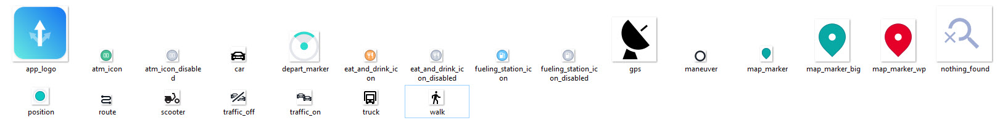

Example apps
Most code snippets in this guide can also be found as part of small, focused example apps. You have two ways to access them:
Find the latest example apps for your edition bundled within the downloaded package you can find on the HERE platform.
Find the latest example apps for your edition on GitHub.
Note
Most example apps are written in a consistent way where a "XYExample.dart" file contains the relevant code. UI elements are mostly left out or kept minimal to not shadow the important parts of the code. Note that the HERE SDK itself does offer most APIs headless without UI.
For this guide and the accompanying example apps, we preferably avoid the use of lambda notations to show the full type of information and other details, such as callback or listener name. Since Android Studio supports one-click conversion between anonymous classes and lambdas, adapting the examples to suit your personal preference should be simple.
Despite the popular phrase that "everything is a widget", the example code is kept free of most Flutter dependencies - instead it's mostly pure Dart code that shows how the HERE SDK can be used.
List of example apps
- HelloMap: Shows the classic 'Hello World'.
- Camera: Shows how to change the target and the target anchor point and how to move to another location using custom map animations.
- CameraKeyframeTracks: Shows how to do custom camera animations with keyframe tracks.
- CustomMapStyles: Shows how to load custom map schemes made with the HERE Style Editor. Exclusively available for the Explore Edition and the Navigate Edition.
- CustomRasterLayers: Shows how to load custom raster layers. Exclusively available for the Explore Edition and the Navigate Edition.
- Gestures: Shows how to handle gestures.
- OfflineMaps: Shows how the HERE SDK can work fully offline and how offline map data can be downloaded for continents and countries. Exclusively available for the Navigate Edition.
- MapItems: Shows how to add circles, polygons and polylines, native views, 2D and 3D map markers to locate POIs (and more) on the map. 3D map markers are exclusively available for the Explore and Navigate Editions.
- MultiDisplays: Shows how a HERE SDK map can be shown on two separate displays using Android's Multi-Display API. Exclusively available for the Explore Edition and the Navigate Edition.
- OffscreenMapSurface: Shows how the HERE SDK can be used to generate images of the map, without the need to put a map view on screen. Exclusively available for the Explore Edition and the Navigate Edition (Android only).
- CartoPOIPicking: Shows how to pick embedded map markers with extended place details. Embedded map markers are already visible on every map, by default. Exclusively available for the Explore and Navigate Editions.
- Routing: Shows how to calculate routes and add them to the map.
- RoutingHybrid: Shows how to calculate routes and add them to the map. Also shows how to calculate routes offline, when no internet connection is available. Exclusively available for the Navigate Edition.
- EVRouting: Shows how to calculate routes for electric vehicles and how to calculate the area of reach with isoline routing. Also shows how to search along a route.
- Public Transit: Shows how to calculate routes for public transportation vehicles such as subways, trains, or buses.
- Search: Shows how to search POIs and add them to the map. Shows also geocoding and reverse geocoding.
- SearchHybrid: Shows how to search for places including auto suggestions, for the address that belongs to certain geographic coordinates (reverse geocoding) and for the geographic coordinates that belong to an address (geocoding). It also shows how to search offline, when no internet connection is available. Exclusively available for the Navigate Edition.
- NavigationQuickStart: Shows how to get started with turn-by-turn navigation. Exclusively available for the Navigate Edition.
- Navigation: Gives an overview of how to implement many of the available turn-by-turn navigation and tracking features. Exclusively available for the Navigate Edition.
- NavigationCustom: Shows how the guidance view can be customized. Exclusively available for the Navigate Edition.
- SpatialAudioNavigation: Shows how to make use of spatial audio notifications for TTS voices during guidance. Exclusively available for the Navigate Edition.
- Positioning: Shows how to integrate HERE Positioning. Exclusively available for the Navigate Edition.
- PositioningWithBackgroundUpdates: Shows how to integrate HERE Positioning with background location updates on Android using a foreground service. Exclusively available for the Navigate Edition.
- HikingDiary: Shows how to record GPX traces with HERE Positioning. Exclusively available for the Navigate Edition.
- Traffic: Shows how to search for real-time traffic and how to visualize it on the map.
- TruckGuidance: Shows how the HERE SDK can be used to calculate routes specific for trucks. In addition, it shows many more truck-related features. Exclusively available for the Navigate Edition (Android only).
- StandAloneEngine: Shows how to use an engine without a map view.
- IndoorMap: Shows how to integrate private venues. Exclusively available for the Navigate Edition.
- UnitTesting: Shows how to mock HERE SDK classes when writing unit tests (the example app is available for the Explore Edition and the Navigate Edition).
How to build an example app
Choose an example of your choice, then inside the example app's folder, open main.dart and set your credentials (key / secret).
Now add the HERE SDK plugin folder:
- Unzip the downloaded HERE SDK for Flutter package. This folder contains various files including this documentation.
- Inside you will find a TAR file that contains the HERE SDK for Flutter plugin.
- Now unzip the TAR file and rename the folder to 'here_sdk' and place it to the
pluginsfolder inside the example app's directory.
Finally, make sure that a device is attached or that an emulator (Android) or simulator (iOS) is running. Execute flutter run from the directory of the example on your terminal - or run the app from within your IDE.
To learn how the HERE SDK integrates into apps, see Integrate the HERE SDK.
List of demo apps
- If you are interested to see a demo of the features the HERE SDK has to offer - or if you simply want to see all features in action, check the HERE WeGo application. This app uses the same technology stack that empowers the HERE SDK.
- Alternatively, you can build and run the reference application (available only for Flutter) which you can find as an open source project on GitHub. This app shows most features of the Navigate Edition including the features from the Explore Edition in an release-ready app with easy-to-understand UX flows and reusable UI assets.
About the reference application
The reference application for the HERE SDK for Flutter (Navigate Edition) shows how a complex and release-ready project targeting iOS and Android devices may look like. You can use it as a source of inspiration for your own HERE SDK based projects - in parts or as a whole. Many parts of the app overlap with the Explore Edition - however, guidance requires the Navigate Edition.

The reference application can be used as a base project to start your own app development.
On top, the reference application offers a lot of ready-made assets that can be used for your own apps based on the terms shown on the GitHub page.
Below you can find the available selection of maneuver icons that can be shown to indicate a maneuver action - for example, during turn-by-turn guidance.

The reference application also contains a variety of other icons, such as map markers, to get you started quickly with your own application.

Below you can find an overview of selected features along with the related code that can be used in your own projects.
- Main menu / landing page: The landing page displays a map with an options tab on the top left and a search button on the bottom right: Source for Main Menu and Landing Page.
- Search: The search result option takes you to the exact requested location with a cyan-colored placeholder: SearchResult Source Code.
- Search suggestions: Search suggestions are loaded as soon as typing starts: Search Suggestion and Popup Source Code.
- Place detail info bubble: The place detail popup shows a detailed view of the selected place: Source Code for Place Detail Popup.
- Routing: The routing section in providing a visual overview of the fastest route available to reach your location: Source Code for Routing.
- Route preference for different vehicles: Simulated location events (along the route) are provided for different vehicles as per their route preference: Source Code for Route Preference for Different Vehicles.
- Navigate along a route: Navigating becomes easier with the clean and crisp navigation provided to take you the requested location efficiently: Source Code for Navigating along a route.
- Positioning and user consent: Source Code.
- Offline maps: Source Code.
More reusable icons can be found in the official HERE Icon Library.
How to build the reference application
Build instructions are given on the GitHub page hosting the reference application.
Note that only major versions of the HERE SDK for Flutter are supported.